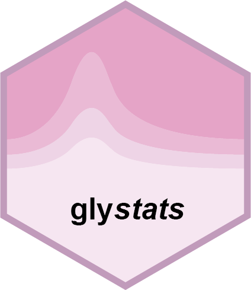

Sample and variable identities in SE inputs
gly_identity.RdStatistical functions use the axes of a SummarizedExperiment (including
glyexp::GlycomicSE and glyexp::GlycoproteomicSE), not ordinary metadata
columns named variable or sample, to identify observations.
Details
Values and metadata correspond by position: assay rows to rowData() rows,
and assay columns to colData() rows. The default public assay() accessor
supplies the object's top-level dimnames. Those names, rather than the
underlying assay's possibly stale dimnames, determine result identifiers.
On each axis, non-missing, non-empty, unique names are retained as IDs. If
names are NULL, duplicated, missing, or empty, the entire axis instead uses
unique position IDs: .glystats_variable_1, .glystats_variable_2, etc., or
.glystats_sample_1, .glystats_sample_2, etc. This does not rename or
otherwise modify the input. Distinct rows/columns are never pooled because
they share a label. These IDs are local to the current input order, not
persistent identifiers across independently reordered or subsetted inputs.
Every SE analysis result has an identifiers element, even when
add_info = FALSE. Its variable and sample elements each contain:
data: a tibble withposition(input-axis position),id(used in tidy results and raw models), andname(the original, possibly repeated or empty label;NAwhen that axis had no names).generated: whether position IDs were needed for that axis.names_missing: whether the entire original name vector wasNULL.
SE tidy results use .variable and .sample as identity columns.
identifiers$columns is the named character vector
c(variable = ".variable", sample = ".sample"), identifying this output
contract. Ordinary metadata named variable or sample remains unchanged.
Use the mapping's name column for display labels. Correlation endpoint
columns are .variable1/.variable2 or .sample1/.sample2. Clustering
tables use the corresponding dotted identity column; dendrogram label
columns remain unchanged. Correlation endpoints,
clustering labels, set memberships, and raw model names use the same IDs.
Custom sets in gly_set_test() must likewise refer to these IDs, not
ambiguous original labels.
Metadata are ordinary annotation/model columns and are read in input order.
In particular, group_col = "sample" uses colData(exp)$sample, not the
sample IDs. When add_info = TRUE, annotations are attached by the positions
recorded by the axis IDs. A metadata column colliding with a result field
receives an _metadata suffix, repeated until the name is unused; its
values are preserved, and result identifiers/statistics are never overwritten.
filter_sig_vars() can map generated variable IDs back to the original
input rows, retaining the original class, names, and metadata. Because names
cannot detect reordering of duplicate/unnamed rows, these results record a
fingerprint of the input and require the same unmodified experiment for
filtering. Re-run the analysis after changing, reordering, or subsetting it.
Results created before this mapping was recorded cannot filter an ambiguous
axis safely. With ordinary unique variable names, existing name-based
filtering remains supported, including reordered inputs.
The deprecated glyexp_experiment input retains its legacy ID-column
contract, including undotted variable/sample result identities. Results
made by older glystats versions also retain their original columns. Use the
explicit identifiers$columns marker, not the mere presence of a dotted
column (which may be old ordinary metadata), to detect the new contract.
This SE result-column change is an API change even for named unique inputs;
consumers such as plotting packages must adapt before adopting this output.
Examples
values <- matrix(c(1, 2, 3, 4, 5, 8, 6, 10), nrow = 2,
dimnames = list(c("same", "same"), NULL))
exp <- SummarizedExperiment::SummarizedExperiment(
assays = list(abundance = values),
rowData = S4Vectors::DataFrame(variable = c("annotation A", "annotation B")),
colData = S4Vectors::DataFrame(group = c("A", "A", "B", "B"))
)
res <- gly_fold_change(exp)
#> ℹ Ref Group: "A"
#> ℹ Test Group: "B"
res$tidy_result
#> # A tibble: 2 × 3
#> .variable variable log2fc
#> <chr> <chr> <dbl>
#> 1 .glystats_variable_1 annotation A 1.46
#> 2 .glystats_variable_2 annotation B 1.58
res$identifiers$variable$data
#> # A tibble: 2 × 3
#> position id name
#> <int> <chr> <chr>
#> 1 1 .glystats_variable_1 same
#> 2 2 .glystats_variable_2 same